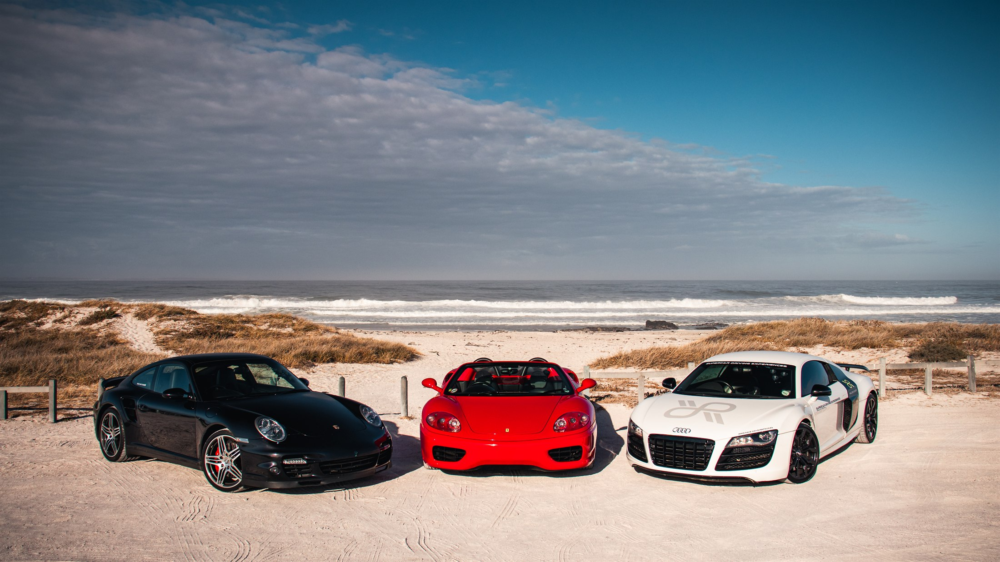

Fairways & Fast Cars
Championship golf between the mountains and the sea — and the drive that links it all.
The Cape gives a golfer everything: parkland fairways beneath Table Mountain, a lagoon course laid along the Kogelberg, ocean holes on the whale coast. The finest of them sit a scenic drive apart — and that drive, along Chapman's Peak and Clarence Drive, is one of the great roads anywhere in the world.
So this journey plays both. Three gracious hotels, four championship courses, and the transfer to Arabella made not in a shuttle but behind the wheel of a Ferrari, an Audi R8 or a Porsche 911 — the sea on every bend, the fairways waiting at the end. Non-golfing partners are looked after in parallel: spa days, whales in season, and the vineyards of Constantia and the Winelands.

The journey
Nine unhurried days across the Cape — three gracious hotels, four championship courses, and one unforgettable drive between them.
Constantia fairways
Where it begins
Base beneath the mountain, in the vineyards of Constantia. Two contrasting Cape rounds to open the trip — the modern layout of Cape Royal Golf Estate, and the classic parkland of Westlake Golf Club beneath the peaks. Play one, or both, with the Mother City and the Winelands close at hand.
Cape Town to Arabella
The drive
Rather than a shuttle over Sir Lowry's Pass, take the wheel. The supercar run down the coast — Chapman's Peak carved into the cliff, Clarence Drive between the mountain and the sea, a long photography stop above Kogel Bay — arriving at Arabella with the day still young. A professional lead driver runs ahead the whole way, radio in hand.
Arabella & Hermanus
The lagoon course
Golf at Arabella Golf Club, consistently ranked among South Africa's finest — laid along the Bot River lagoon beneath the Kogelberg, a spectacular and testing round. Stay on the Hermanus cliffs above the sea, with whales close inshore from June to November, and the Old Harbour and cliff path a short walk away.
a fitting finale
The last eighteen
East along the coast to the Garden Route for a final, friendly round among the milkwoods and fynbos, and a few last gracious nights by the sea before home.
Tee times and caddies pre-booked at every course; non-golfing partners looked after — spa, whale-watching and vineyard days arranged in parallel. The Cape golf season runs roughly October to April.
Championship golf, four ways.
Arabella Golf Club
Along the Bot River lagoon beneath the Kogelberg — among South Africa's very finest, and the heart of this journey.
Cape Royal Golf Estate
A modern Cape layout near the Mother City — a striking, contemporary opening round.
Westlake Golf Club
Classic parkland beneath the mountain — an unhurried, walkable Cape Town classic.
- Three gracious hotels and four championship courses across the Cape
- Tee times and caddies pre-booked at every course
- The supercar drive to Arabella as your signature transfer
- Non-golfing partners looked after — spa, whales in season, vineyards
- Every detail arranged and hosted, first enquiry to final handover, by Amara
Nine days is a comfortable frame; we flex it to your dates and your handicap. The drive can open the trip or punctuate it, at any of the three lengths in the companion brochure. One accountable pair of hands carries the golf, the cars, the hotels and the whole rhythm of the journey — same time zone, same messaging apps, no distance between you and the answer.
Begin the conversation.
WhatsApp +971 58 858 5960 · amarafrica.com